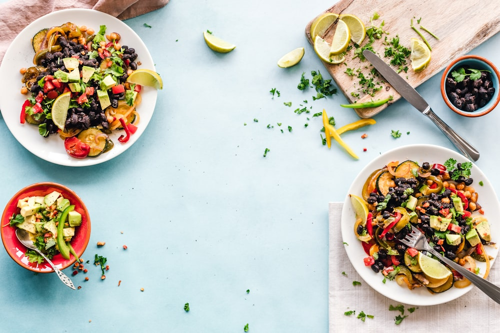

Culinary Science, Hearth Craft & Food History
Deep dive technical treatises exploring wood-fired hearth thermodynamics, heirloom wheat fermentation, and zero-proof botanical pairing science.

The Science of Wood-Fired Sourdough Fermentation and Hearth Baking
Analyzing wild yeast microbial ecology, lactic acid enzymatic breakdown, and hearth stone crust caramelization.
Read Treatise →
Thermodynamics of Live-Fire Hearth Cooking and Ember Roasting
Infrared radiant wavelengths, hardwood coal beds, and the physics of the Maillard reaction in whole-vegetable roasting.
Read Treatise →
The Cultural History of the Communal Supper Table
From ancient symposia and medieval feasting halls to modern slow-food salons: how shared tables foster human connection.
Read Treatise →
Heirloom Grain Landraces vs. Modern Monoculture Wheat
Comparing the genetic biodiversity, gluten digestibility, and mineral density of einkorn, emmer, and spelt.
Read Treatise →
Botanical Zero-Proof Pairing Science in Fine Evening Dining
How acid-tannin structures from foraged shrubs, fermented teas, and bitter roots mirror fine dining with zero-proof sensory clarity.
Read Treatise →
The Art of Family-Style Feast Choreography at the Banquet Table
Pacing courses, platter dimensions, and table ergonomics to encourage natural sharing and conversation among dinner guests.
Read Treatise →